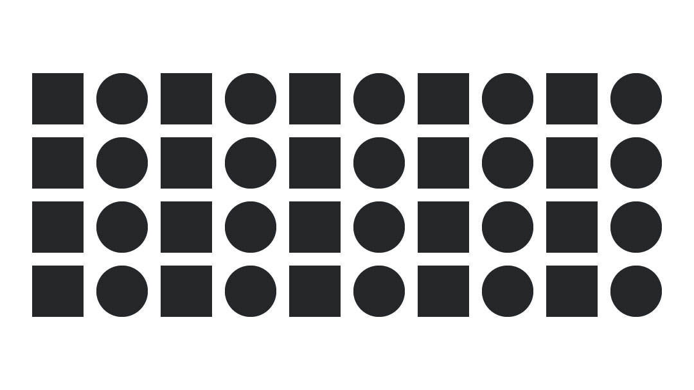

Semelhança
A lei da semelhança dita que objetos similares se agruparão entre si. Na imagem abaixo, a maioria das pessoas enxergam colunas de quadrados e colunas de círculos. De tal forma que poucas pessoas vão associar isto como uma linha horizontal onde quadrados e círculos se intercalam.
Proximidade
Na lei da Proximidade, os elementos próximos tendem a se agrupar, constituindo uma unidade. Estes elementos vão parecer mais próximos e unificados quanto menor for a distância entre eles. Você nota os 16 quadrados, ou os 4 grupos de quadrados na imagem ao lado?